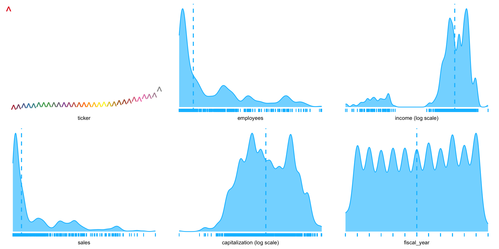

pacman::p_load(tidyverse, ggthemes, knitr)外国書購読 Day2
Foundations of Audit Analytics
Soichi Matsuura
Review of the previous lecture
Introduction to R
- Assign a value to a variable with
<-or=. - An object’s name is flexible, but it must begin with a letter and typically follows snake_case.
- like
df_original,my_data,total_asset, etc.
- like
- Use
#for comments. - Use
pacman::p_load()to load packages.
Assigning values
Replace the right-hand side with the left-hand side object x with <- or =.
<-
Example
pipe operator %>% or |>
Use pipes %>% or |> to chain functions together. The pipe operator assigns the left-hand side result to the first argument of the right-hand side function.
A |> function(B)
has same meaning as function(A, B).
Example
Try the following code.
Use packages
We can use packages to add functionality beyond the functions that come with R. Install a package to use it.
Installed the pacman package.
Load packages
Just installing a package does not allow you to use its functions. To use a package, you need to load it with the library() function.
This allows you to use the functions of the pacman package.
Load multiple packages
We can load multiple packages at once using the p_load() function of the pacman package.
This allows you to use the functions of the tidyverse, pysch, and tableone packages. If there are any packages that have not been installed, they will be installed automatically.
Specify the package
You can use the :: to specify the package name without loading the package with the library() function.
パッケージ名::関数()
Without running library(pacman), you can use the p_load() function. Use dplyr package’s mutate() function as dplyr::mutate().
Check the data
Check the data with the head() function.
head()
If you want to see the structure of the data, use the str() function.
str()
numは数値データchrは文字データ
Chapter 2 Foundations of Audit Analytics
Business and Data Analytics
- The modern science of data analytics evolved from early projects to add scientific rigor in two fields —
- games of chance and
- governance (Stigler 1986).
- The latter application, in governance, focused on summarizing the demographics of nation-states and lent its name, statistics, to the field.
The field has steadily evolved to include exploratory analysis, which used computers to improve graphics and summarizations; and to include the computationally intensive methods termed machine learning.
The mathematical foundations of statistics evolved from the 17th ~ 19th centuries based on work by Thomas Bayes, Pierre-Simon Laplace, and Carl Gauss.
Statistics as a rigorous scientific accelerated at the turn of the 20th century under Francis Galton, Karl Pearson and R.A. Fisher, introducing experimental design and maximum likelihood estimation (Stigler 1986).
Exploratory data analysis
- Exploratory data analysis (EDA) arose from seminal work in data summarization presented in Cochran et al. (1954) and Tukey (1980).
- EDA built on the emerging availability of computing power and software.
- EDA is now an essential part of data analytics, and is important for determining how much, and what kind of information is contained in a dataset.
- In contrast, the statistics of Pearson and Fisher tended to focus on testing of models and prediction.
- EDA complements such testing by assessing whether data obtained for testing is actually appropriate for the questions posed; in the vernacular of machine learning, EDA helps us extract the features that are contained in the data.
- In our current era of massive, information rich datasets, where often we have no control, and limited information about how the data was obtained, EDA has become an essential precursor of model testing and prediction.
- A typical first step in analytical review of a company might be to review the industry statistics to find out what part, if any, of our client’s financial accounts are outliers in the industry.
- Unusual account values or relationships can indicate audit risks that would require a broader scope of auditing.
- Exploratory statistics are easy to implement, yet are ideal for quickly highlighting unusual account values.
- We will first load a dataset of industry statistics that have been downloaded from the Wharton Research Data Service repository, and conduct simple summaries of the data.
- The R package
plotluckautomatically chooses graphs that are appropriate for the data, and is an ideal tool for quick visualization of data. - In general, R lets the dot symbols stands for all variables in the data set and
.~1regresses the variables against the intercept, thus giving the distribution (essentially a smoothed histogram) (Fig. 1)
Installing and loading packages (memo)
- Usually, install a package with
install.packages("hoge")and load it withlibrary(hoge). - Now use the
pacmanpackage to load packages easily.
load the packages with pacman::p_load(hoge1, hoge2, hoge3).
You can load them all at once. If there is something not installed, it will be installed automatically.
パッケージの説明
読み込むパッケージの機能
auditanalytics: 著者が作成したパッケージでいろんなデータが活用できる。tidyverse: データを操作する最高のパッケージ群で，超絶便利plotluck: グラフを一気に作成できるEDA用パッケージbroom: 統計モデルの出力をデータフレームに変換
loading the data and summary statistics
Read the data using the read.csv() function and display the summary statistics using the summary() function. Load the dataset from the auditanalytics package.
You get the data. Let’s see the summary statistics.
Access the specific variables in the data
You can access the specific variables in the data using the $ operator.
データフレーム$変数名
If you want access a variable ticker of insudstry_stats object, you use industry_stats$ticker.
Data structure and descriptive statistics
You can see the structure of the data using the str() function and the descriptive statistics using the summary() function.
'data.frame': 1280 obs. of 6 variables:
$ ticker : chr "GE" "GE" "GE" "GE" ...
$ employees : int 319 319 327 327 316 316 333 333 307 307 ...
$ income : num 20829 20829 22208 22208 16711 ...
$ sales : num 160854 160854 169719 169719 148559 ...
$ capitalization: int 382421 382421 370240 370240 367474 367474 292165 292165 282006 282006 ...
$ fiscal_year : int 2006 2006 2007 2007 2005 2005 2015 2015 2013 2013 ...chr means character, int means integer, and num means numeric.
ticker employees income sales
Length:1280 Min. : 1.00 Min. :-38732.0 Min. : 336.4
Class :character 1st Qu.: 12.00 1st Qu.: 165.2 1st Qu.: 4260.4
Mode :character Median : 44.00 Median : 592.2 Median : 12928.3
Mean : 95.56 Mean : 2139.2 Mean : 34185.2
3rd Qu.:152.00 3rd Qu.: 2803.5 3rd Qu.: 51411.2
Max. :434.00 Max. :104821.0 Max. :207349.0
NA's :2
capitalization fiscal_year
Min. : 49 Min. :2004
1st Qu.: 3815 1st Qu.:2007
Median : 11389 Median :2010
Mean : 33641 Mean :2010
3rd Qu.: 47400 3rd Qu.:2013
Max. :382421 Max. :2016
ticker is a character variable, so it doesn’t have a summary statistics.
table function
The table() function is useful for counting the number of occurrences of each value in a variable.
A AAN AAP ABM AFL AIG AMD AMP AMTD ARW AWI AXP BA BAC BBY BC
12 22 22 11 12 3 22 3 18 22 10 30 55 22 12 22
BKS BOH BR BSX C CAH CAT CCI CVC CVS CYH D DBD DFS DGX DNB
12 11 9 11 18 12 11 11 11 44 11 22 11 12 11 11
EFX EMR F FDX FNF GCO GE GM GNW GPI GPN GPS GS H HD HIG
44 12 11 12 24 12 22 33 3 11 12 36 18 7 84 1
HNT HON HRB HTZ HUM IBM JLL JWN KBH KBR KEY KND KODK LMT LNKD LXK
54 22 60 10 25 11 5 12 11 10 22 11 11 22 5 11
MDT MET MOH MSI MUSA NGVC NLSN NNI NSM NYT
24 2 14 22 9 5 5 5 2 22 knit and kableExtra
You can make more beautiful graphs using the knitr package.
Make a graph with plotluck
.~1 shows distribution of each variable in the data frame, separately.
Another example: income vs. other variables.
- There are four continuous (employees, income, sales, and capitalization) and one categorical (fiscal year) variable; we will get rid of the ticker.
- Where there is a significant range of values in a variable,
plotluckautomatically presents the x-axis on a log scale. - Output is set to
verbosein order to estimate conditional entropies for ordering the plot (lower values indicate stronger informational value). - There is a clear correlation of income with capitalization, which we can assess by applying frequency weights (Fig. 2).
EDA of income vs. other variables
EDA of Income vs. other variables
How has the industry’s profit changed? (Fig. 3).
Income distribution over time.
Firms with negative income values are excluded.
- New methods for analyzing massive datasets have emerged in the past decade, and are continually evolving, as a product of the machine learning revolution.
- The three most common terms used to describe these tools are reserved for a nested set of three technologies:
- Artificial Intelligence = “any attempt to mimic human learning/intelligence”
- Machine Learning = “computational methods for learning from data”
- Deep Learning = “machine learning methods that mimic human neural networks (perceptrons)”
- The emphasis on “learning” instructs us on the differences between these technologies and more traditional statistical approaches.
- “Learn” is a transitive verb (i.e., takes an object) and involves
- A subject (who makes a decision)
- learns (from reviewing data) about some
- construct (parameter value, classification, etc.)
- The essential components of learning are: the decision, the learning method, the construct about which we are learning, and the quality assessment (how well we learned).
AI
- The field of artificial intelligence was motivated by Vannevar Bush and Bush’s (1945) article “As we may think” and initiated projects in rule-based and symbolic programs such as early chess programs that involved hardcoded rules crafted by programmers.
- Random forests quickly became a favorite on the platform, but by 2014, gradient boosting machines were outperforming them, and by 2016, perceptron models, in particular building on the successes at Google, began dominating the field.
ML
- Machine learning re-envisioned several of the fundamental methods of statistics.
- Computationally intensive stochastic gradient boosting replaces the first-order conditions in calculus used in statistics search for solutions.
- The simple squared-error loss function in parametric statistics expanded to a wider range of solution concepts.
- Machine learning is not limited to fitting statistical depictions of probability distributions typically defined with 1~3 parameters.
Clasification
- For classification problems, cross-entropy measures offered much better fit than, say, comparable logit or probit models.
- In 2011, the top-five accuracy of the winning model, based on classical approaches to computer vision, was only 74.3%. By 2015, the winner reached an accuracy of 96.4%.
- Business analytics’ embrace of machine learning is inspired by the numerous successes: near-human-level image classification, language translation, speech recognition, handwriting transcription, text-to-speech conversion, autonomous driving and better than human Go and Chess games.
Despite these successes, there are reasons for a balanced, holistic perspective on the tools of data analytics.
Machine learning outperforms twentieth century statistics for:
- Large datasets: These tend to overfit simple statistical models and may be a basis for p-hacking
- Large complex construct spaces: In models estimating many parameters, like in image processing, 1-3 parameter distributions lack richness.
- Feature extraction: the major contribution of exploratory data analysis was feature extraction from data, which could be used to decide where a dataset was appropriate for model testing.
But statistical models still outperform machine learning models (though this is steadily evolving) where there is a:
- clear interpretation of results of analysis
- consistency
- replicability
- formal definition of “information”
- clear roles for data
- clear demands on constructs
- clear philosophies on the meaning of “learn”
- formal logic and notation
Rest of Chapter 2
- The rest of this chapter is devoted to classifying types of data, which in turn says something about the particular importance that we attach to an entity, and way that we measure it.
- In the process I will share some of the excellent graphic tools that the R language offers the auditor for understanding accounting data.
TYPE OF DATA
Accounting Data Types
- McCarthy (1979, 1982) proposed a design theory of accounting systems that applies the Chen (1976) framework to accounting.
- In it, accounting transactions are measurements of economic events involving an entity’s contractual activities with a related party.
- These measurements result in the recording of numbers, time, classifications, and descriptive information.
- Classifications are dictated by a firm’s Chart of Accounts which delineates the types of economic activities in the firm.
Measurements
- Measurements are in monetary units, thus require some method of valuing an economic event.
- The ubiquity of information assets makes valuation one of the most difficult challenges facing modern accountants.
- Descriptive information was originally entered in notes to a journal entry.
- But social networks and news outlets provide auditors with a plethora of relevant information in textual form. Information technology, statistical methods, and software specify data types to differentiate the processing and storage of data.
- The R language excels at managing data.
- Indeed, this particular strength sets R, as an audit language, above any other software language.
- This means, when using R, that the auditor never has to worry that some part of the client’s data will remain inaccessible.
- Packages exist for any commercially important data structure and format, whether real-time stream, web-based, cloud-based, or on client’s bespoke system, can be analyzed with R code.
- The next sections of this chapter discuss the most important data and file types, with examples of how these are represented in R.
- The examples here use several databases ranging from financial reports of industry firms over time, of Sarbanes-Oxley reports and of control breaches.
- In the process, the management of various types of information are highlighted: e.g., ticker information is categorical, fee information is continuous, breach and SOX-audit decision data is binary, and so forth.
Numerical vs. Categorical
- Two basic types of structured data: numeric and categorical.
- Numeric data comes in two forms: continuous, such as wind speed or time duration, and discrete, such as the count of the occurrence of an event.
- Categorical data takes only a fixed set of values
- Binary data is an important special case of categorical data that takes on only one of two values, such as 0/1 etc.
- Another useful type of categorical data is ordinal data in which the categories are ordered; an example of this is a numerical rating (1, 2, 3, 4, or 5).
Classifying the type of data
Why do we bother with a taxonomy of data types?
- It turns out that for the purposes of data analysis and predictive modeling, the data type is important to help determine the type of visual display, data analysis, or statistical model.
- In fact, data science software, such as R and Python, uses these data types to improve computational performance.
- More importantly, the data type for a variable determines how software will handle computations for that variable.
sox_stats <- read.csv(　# read csv file
system.file("extdata", "ch_2_data_types.csv", # dataset
package = "auditanalytics", mustWork = TRUE
))
# |> filter(card != "card")
summary(sox_stats) # descriptive stats ticker date card disc
Length:1514 Min. :2005 Length:1514 Min. :0.0000
Class :character 1st Qu.:2007 Class :character 1st Qu.:0.0000
Mode :character Median :2010 Mode :character Median :0.0000
Mean :2010 Mean :0.1739
3rd Qu.:2013 3rd Qu.:0.0000
Max. :2016 Max. :1.0000
NA's :2 NA's :2
hack insd phys port
Min. :0.0000 Min. :0.0000 Min. :0.0000 Min. :0.0000
1st Qu.:0.0000 1st Qu.:0.0000 1st Qu.:0.0000 1st Qu.:0.0000
Median :0.0000 Median :0.0000 Median :0.0000 Median :0.0000
Mean :0.2467 Mean :0.1382 Mean :0.0463 Mean :0.2837
3rd Qu.:0.0000 3rd Qu.:0.0000 3rd Qu.:0.0000 3rd Qu.:1.0000
Max. :1.0000 Max. :1.0000 Max. :1.0000 Max. :1.0000
NA's :2 NA's :2 NA's :2 NA's :2
stat unkn effective_303 mat_weak_303
Min. :0.00000 Min. :0.00000 Min. :0.0000 Min. :0.00000
1st Qu.:0.00000 1st Qu.:0.00000 1st Qu.:1.0000 1st Qu.:0.00000
Median :0.00000 Median :0.00000 Median :1.0000 Median :0.00000
Mean :0.03704 Mean :0.03968 Mean :0.9616 Mean :0.03241
3rd Qu.:0.00000 3rd Qu.:0.00000 3rd Qu.:1.0000 3rd Qu.:0.00000
Max. :1.00000 Max. :1.00000 Max. :1.0000 Max. :1.00000
NA's :2 NA's :2 NA's :2 NA's :2
sig_def_303 auto_1 auditor_agrees_303 effective_404
Min. :0.0000 Min. :0.0000 Min. :0.00000 Min. :0.0000
1st Qu.:0.0000 1st Qu.:0.0000 1st Qu.:0.00000 1st Qu.:0.0000
Median :0.0000 Median :0.0000 Median :0.00000 Median :0.0000
Mean :0.1157 Mean :0.2037 Mean :0.08003 Mean :0.3935
3rd Qu.:0.0000 3rd Qu.:0.0000 3rd Qu.:0.00000 3rd Qu.:1.0000
Max. :1.0000 Max. :1.0000 Max. :1.00000 Max. :1.0000
NA's :2 NA's :2 NA's :2 NA's :2
audit_fee non_audit_fee tax_fees
Min. : 100000 Min. : 0 Min. : 0
1st Qu.: 3785984 1st Qu.: 477686 1st Qu.: 93140
Median : 7956000 Median : 1068000 Median : 370000
Mean : 15321536 Mean : 3679039 Mean : 1451705
3rd Qu.: 17800000 3rd Qu.: 3400000 3rd Qu.: 1311000
Max. :112200000 Max. :41100000 Max. :20800000
NA's :2 NA's :2 NA's :2 Continuous Data
Continuous data has numeric*(実数値).
- Many of our key financial metrics are continuous measures.
- Conceptually, we can subdivide continuous data without end.
- We can look at the density functions of continuous data using the
plotluckpackage.
Discrete (Integer, Count) Data
- In practice, our minimum level of resolution in accounts is one dollar (or single monetary unit).
- This resolution limit is in fact the basis of audit procedures such as dollar-unit sampling.
- In this example we use ggplot to produce a histogram of discrete values.
- The level of resolution determines the number of bins, in this case 20.
Categorical Data
Categorical (Enums, Enumerated, Factors, Nominal, Polychotomous) Data
- Categorical data can take on only a specific set of values representing a set of possible categories.
- The firm’s Chart of Accounts imposes a categorical data scheme on the economic events which are the basis of journal entries in the accounting system.
- In our Sarbanes-Oxley data, we might be interested in the variation over time of audit fees, categorized by the firms they were charged to.
sox_stats |>
select(ticker, audit_fee, non_audit_fee, tax_fees) |> # 変数選択
filter(as.character(ticker) < "AI") |> # AIより前の文字
ggplot() + aes(x = ticker, y = audit_fee) + # 作図
geom_violin() + # ヴァイオリンプロット
scale_y_continuous(trans = "log10", labels = scales::comma) # 対数変換コード
bank_fin <- read.csv( # CSVファイルを読み込む
system.file("extdata", "ch_2_yahoo_fin.csv",
package = "auditanalytics", mustWork = TRUE)
)
bank_fin |>
filter(change != "ticker") |> # ticker以外
mutate(# データの変換
change = as.numeric(change), # 数値に変換
capitalization = as.numeric( # Bを削除
str_replace(capitalization, "B", ""))
) |>
pivot_longer( # wide to long
cols = c(price, change, percent_change, volume,
vol_ave, capitalization, pe_ratio),
names_to = "metric", # 変数名
values_to = "value" # 値
) |>
ggplot() + aes(x = metric, y = value) + # データ
geom_boxplot() + # 箱ひげ図
scale_y_continuous(trans = "log10", labels = scales::comma) # 縦軸を対数Binary Data
Binary (Dichotomous, Logical, Indicator, Boolean) Data
- Binary data represents a special case of categorical data with just two categories.
- These are data’s way of providing answers to yes/no or true/false. − An audit opinion will provide a yes/no answer concerning whether the F/S are fairly presented.
- In the following figure, we are interested in whether credit card fraud is influenced by the fees paid to the auditor.
- We analyze a binary variable by looking at the variation in other variables under a 0 or 1 value of the binary variable.
expand for full code
# card変数に文字列"card"が含まれていてエラー
sox_stats$card <- as.integer(sox_stats$card) # 整数に変換
# gather ではなく pivot_longer を使う
sox_stats_long <- sox_stats |>
pivot_longer(
cols = c(effective_303, mat_weak_303, sig_def_303,
effective_404, auditor_agrees_303),
names_to = "metric",
values_to = "value")
# 作図
ggplot(sox_stats_long) +
aes(x = non_audit_fee, y = audit_fee, col = metric) +
geom_violin() + # バイオリン・プロット
scale_x_continuous(trans = "log2", labels = scales::comma) +
scale_y_continuous(trans = "log2", labels = scales::comma) # 対数軸Ordinal Data
- Ordinal data is categorical data with an explicit ordering.
- Ordinal data provides an important control over documents of original entry in accounting systems.
- When a journal entry of any sort is generated, it must be uniquely identifiable, and generally the sequence of identifying numbers is assigned in chronological sequence.
- Modern systems assign these numbers internally, but auditors still consider sequential number of input documents to be one of the more important internal controls in a system.
Make an original function
## ランダムな日付を生成する関数rdateを作成
rdate <- function( # 引数を指定
x,
min = paste0(format(Sys.Date(), "%Y"), "-01-01"),
max = paste0(format(Sys.Date(), "%Y"), "-12-31"),
sort = TRUE
) { # 関数の本体
dates <- sample(
seq(as.Date(min), as.Date(max), by = "day"),
x, replace = TRUE)
if (sort == TRUE) {
return(sort(dates))
} else {
return(dates)
}
}Setting
Use the rdate function to generate a random date for each of the 1000 journal entries.
invoice_no <- date <- 1:1000 ## placeholder
journal_ent_no <- cbind.data.frame(invoice_no,date)
date <- rdate(1000)
journal_ent_no$date <- date[order(date)]
journal_ent_no$invoice_no <- seq(1,1000) + rbinom(1000,1,.1) # add some errors
duplicates <- duplicated(journal_ent_no$invoice_no)
raw <- seq(1,1000)
journal_dups <- cbind.data.frame(raw,duplicates)journal_dups Data
Make a graph
You can find the duplicated invoices by looking at the graph.
journal_ent_no |>
filter(duplicates == TRUE, invoice_no < 100) |>
kable(longtable = T, caption = "Duplicated Invoices") |>
kable_styling(
bootstrap_options = c("striped", "hover", "condensed"),
full_width = F, font_size = 28)| invoice_no | date |
|---|---|
| 16 | 2024-01-06 |
| 26 | 2024-01-10 |
| 50 | 2024-01-17 |
| 86 | 2024-01-30 |
- But graphs provide immediate access to the degree of problem, by looking at the number of exceptions in the graph, and are most visible if exceptions are rendered in a contrasting color such as the green used in the accompanying charts.
- Often this is all that the auditor needs to render an opinion on internal controls, as it is the client’s responsibility to correct these problems.
What’s
- The
!operator is used to negate a logical value. %in%is a binary operator that returns a logical value indicating whether the element on the left is found in the element on the right.- So
!raw %in% journal_ent_no$invoicereturns a logical vector of the same length asrawthat isTRUEif the corresponding element ofrawis not found injournal_ent_no$invoice.
Data Storage and Retrieval
- The amount of recorded data produced by human activity has probably been growing exponentially for more than a millennium.
- Most data today is digitized, both for archival storage as well as display.
- This is good for the environment (newsprint alone in the 1970s accounted for 17% of US waste) but it also means that this data is potentially available for computer processing.
- The current amount of digitized data is around 20 trillion GB (=2000万PB = 2万EB = 20ZB).
- Much of this increase has been fueled by new structures for storing and retrieving data - video, text, and vast streams of surveillance data - that have arisen since the commercialization of the internet in the 1990s.
- In the nineteenth century, vectors, matrices, and determinants were central tools in engineering and mathematics.
- As accounting developed professional standards in this period, they naturally gravitated to representations that were matrix-like: accounts \times values for financial reporting, and transactions × values for journal entries and ledgers.
- In the twentieth century, spreadsheet tools and rectangular tables of data brought matrices into the computer domain (Fig.5). -
Terminology
- Terminology for matrix data can be confusing.
- Statisticians and data scientists use different terms for the same thing.
- For a statistician, predictor variables are used in a model to predict a response or dependent variable.
- For a data scientist, features are used to predict a target.
- One synonym is particularly confusing: computer scientists will use the term sample for a single row; a sample to a statistician means a collection of rows.
- Within the past decade, twentieth-century concepts of data storage and retrieval have given way to richer modalities.
- Storage of text has learned from the older discipline of library science; but entirely new approaches are demanded by music and video data.
- One reason that machine learning is able to take on new tasks is their ability to analyze data that would be impossible with the matrix based methods of statistics.
- Statistics evolved in the early twentieth century, building on the matrix algebra that dominated most of science then.
Big Data
The R language uses seven main storage formats for data:
- vectors :ベクトル
- matrices :行列
- arrays :配列
- data frames :データフレーム
- tibbles : データフレームの上位互換
- lists : リスト
- factors : 因子(ファクター)
コード
# A tibble: 6 × 3
year data_type value
<dbl> <chr> <dbl>
1 1930 transient 0
2 1930 financial 323436613.
3 1930 text 332755554.
4 1930 multimedia 0
5 1930 mobile 0
6 1932 transient 0 pivot_longer() is a function from tidyverse that replaces columns with indicators, and is used here to gather multiple lines on a single graph./
expand for full code
big_data$amount <- sqrt(big_data$value)
big_data %>%
ggplot() + aes(x = year, y = amount, col=data_type) +
geom_point(aes(color = data_type, size = amount), alpha = 0.5) +
scale_size(range = c(0.5, 12)) +
scale_y_continuous(trans = "sqrt") +
xlim(1990,2020) + xlab("Year") +
ylab("Number of Bits of Storage")
Vectors
You can make a vector using c() function.
Refer to elements of a vector using subscripts.
Matrix
All columns in a matrix must have the same mode (numeric, character, etc.) and the same length. The general format is
Transfer the vector to a r \times c matrix .
If you want to fill the matrix by rows, use byrow = TRUE
You get a 5 \times 5 matrix. Next, you try to solve the inverse matrix with solve() and calculate the determinant of the matrix with det().
These options mean
byrow = TRUEindicates that the matrix should be filled by rows.byrow = FALSEindicates that the matrix should be filled by columns (the default).dimnames providesoptional labels for the columns and rows.
Indexing
Extract elements from a matrix using subscripts.
Suppliments: Matrix
Now you have below matrix.
Inverse Matrix
You caliculate the inverse matrix using solve().
Unit Matrix
You can check the unit matrix by multiplying the matrix and its inverse matrix. Multiplication of matrices is done using %*%.
array
Arrays are similar to matrices but can have more than two dimensions.
Take these vectors as input to the array.
Show the array.
data.frame and tibble
A data frame is more general than a matrix, in that different columns can have different modes (numeric, character, factor, etc.).
Data frames represent the most widely used format for data storage and retrieval in the R language
Type
data.frameis like a spreadsheet of Excel. Column means variable and row means observation.
Create a data frame
ID <- c(1, 2, 3, 4) # numeric vector
Color <- c("red", "white", "red", NA)　# character vector
Passed <- c(TRUE, TRUE, TRUE, FALSE) # logical vector
mydata <- data.frame(ID, Color, Passed) # create data frame
# access elements of the data frame
mydata[1:2] # columns 1 and 2 of data frame ID Color
1 1 red
2 2 white
3 3 red
4 4 <NA> ID Color
1 1 red
2 2 white
3 3 red
4 4 <NA>Example: Data Frame
Tibbles
Tibbles are the tidyverse’s improvements on data frames, designed to address problems in data analysis at an earlier point.
Otherwise they are used exactly as data frames.
Tibbles are more user-friendly than data frames.
- In R, the basic rectangular data structure is a
data.frame(). - A
data.frame()also has an implicit integer index based on the row order. - While a custom key can be created through the row.names() attribute, the native R
data.frame()does not support user-specified or multilevel indexes. - To overcome this deficiency, two new packages are gaining widespread use:
data.tableanddplyr. - Both support multilevel indexes and offer significant speedups in working with a data.frame.
List
- An ordered collection of objects (components).
- A list allows you to gather a variety of (possibly unrelated) objects under one name.
a <- b <- "seven"
z <- y <- 0
# example of a list with 4 components -
w <- list(name = "Fred", mynumbers = a, mymatrix = y, age = 5.3)
list1 <- list(name = "Fred", mynumbers = a, mymatrix = y, age = 5.3)
list2 <- list(name = "Joe", mynumbers = b, mymatrix = z, age = 10.11) # 誤字
v <- c(list1,list2)
## Identify elements of a list using the [[]] convention.
w[[1]] # 1st component of the list[1] "Fred"[1] "seven"Example: list
Factors
- Tell R that a variable is nominal by making it a factor.
- The factor stores the nominal values as a vector of integers in the range [1, \dots , k ] (where k is the number of unique values in the nominal variable), and an internal vector of character strings (the original values) mapped to these integers.
Make factors
Nominal variables are those that represent discrete categories without any intrinsic order.
Ordered Factors
Ordered factores are those that represent discrete categories with an intrinsic order.
rating <- c( "medium","large", "small") # 文字ベクトル
rating <- ordered(rating) # 順序付きファクターに変換
print(rating)[1] medium large small
Levels: large < medium < smallLevels: large < medium < small ??
Ordered Factors 2
rating <- c("medium", "large", "small") # 文字ベクトル
rating <- ordered(rating, levels = c("small", "medium", "large"))
rating[1] medium large small
Levels: small < medium < largeLevels: small < medium < large OK!
Factors and Ordered Factors
- R treats factors as nominal (i.e., label or naming) variables and ordered factors as ordinal variables in statistical procedures and graphical analyses.
- You can use options in the factor( ) and ordered( ) functions to control the mapping of integers to strings (overriding the alphabetical ordering).
- You can also use factors to create value labels.
Useful Functions for Dataset Inspection and Manipulation
コード
| scope | ben_1 | cost_1 | ben_2 | cost_2 | ben_3 | cost_3 | ben_4 | cost_4 | ben_5 | cost_5 |
|---|---|---|---|---|---|---|---|---|---|---|
| 1 | 810 | 500 | 940 | 440 | 140 | 130 | 190 | 170 | 20 | 10 |
| 2 | 1370 | 890 | 1610 | 1010 | 3970 | 2770 | 3430 | 2460 | 3020 | 2650 |
| 3 | 9070 | 4850 | 6190 | 3250 | 5710 | 3590 | 7650 | 5360 | 7970 | 5220 |
| 4 | 4720 | 2400 | 4650 | 3950 | 330 | 260 | 2120 | 1580 | 2600 | 2020 |
| 5 | 8650 | 4830 | 9100 | 4060 | 5090 | 3480 | 8400 | 7540 | 5930 | 4610 |
Data Inspection
List
Data Manipulation of Lists
Other Data Types
- R supports almost any conceivable type of data structure.
- A few additional structures that are important to account are:
- Time series data records successive measurements of the same variable. It is the raw material for statistical forecasting methods, and it is also a key component of the data produced in surveillance.
- Spatial data structures, which are used in mapping and location analytics, are more complex and varied than rectangular data structures.
- Graph (or network) data structures are used to represent physical, social, and abstract relationships.
Further Study
- This chapter should be seen as a survey of what is possible for auditors interested in an analytical, algorithmic approach to auditing.
- The R package writeups are excellent sources for empirical statistical methods tailored to data structures unique to accounting and auditing.
- Searches of the Internet will also find an increasing number of “data camp” type resources that are parts of larger educational programs.
- Whatever your challenge, you should be able to find assistance through one or more of these resources.
R Packages Required for This Chapter
This chapter’s code requires the following packages to be installed:
tidyverse: data manipulation and visualization,kableExtra: custom tables,plotluck: make many plots automatically,broom: tidy up model output,
References
- Bush, Vannevar, and Vannevar Bush. 1945. As We May Think. Resonance 5(11).
- Chen, Peter Pin-Shan. 1976. The Entity-Relationship Model—Toward a Unified View of Data. ACM Transactions on Database Systems (TODS) 1(1): 9–36.
- Cochran, William G., Frederick Mosteller, and John W. Tukey. 1954. Principles of Sampling. Journal of the American Statistical Association 49(265): 13–35.
McCarthy, William E. 1979. An Entity-Relationship View of Accounting Models. Accounting Review LIV (4): 667–686.
McCarthy, William E. 1982. The REA Accounting Model: A Generalized Framework for Accounting Systems in a Shared Data Environment. Accounting Review LVII (3): 554–578.
Stigler, Stephen M. 1986. The History of Statistics: The Measurement of Uncertainty Before 1900. Cambridge: Harvard University Press.
Tukey, John W. 1980. We Need Both Exploratory and Confirmatory. The American Statistician 34 (1): 23–25.

Kobe University, Business Administration